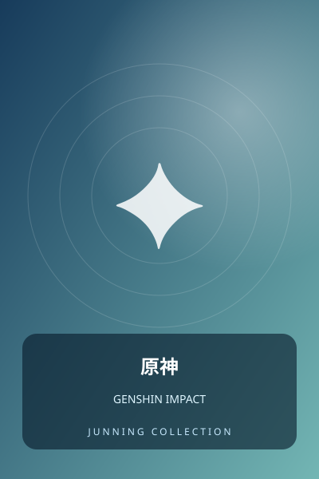
JUNNING / GAMES & ANIMATION
🎮 遊戲與動畫
喜歡的作品，像一扇扇通往不同世界的門。
把玩過的遊戲與看過的動畫收藏在這裡。
遊戲收藏 · 07
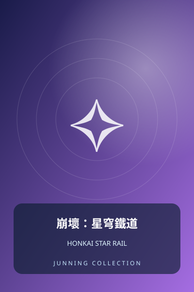
崩壞：星穹鐵道
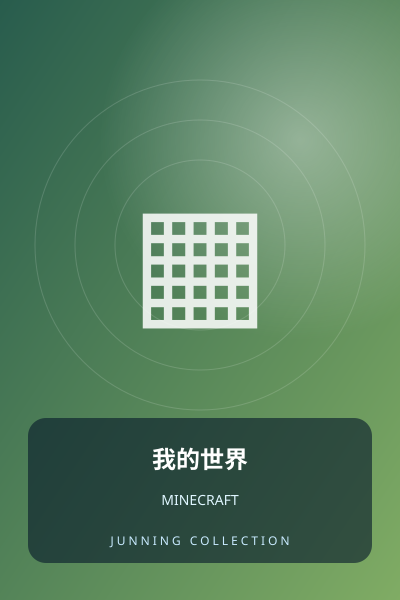
我的世界
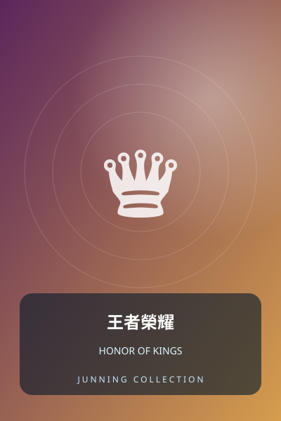
王者榮耀
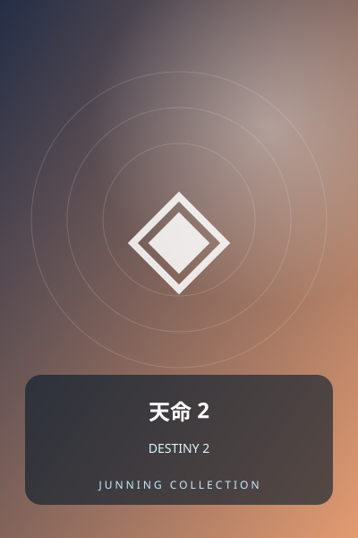
天命 2
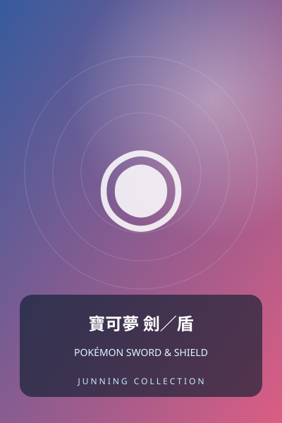
寶可夢 劍／盾
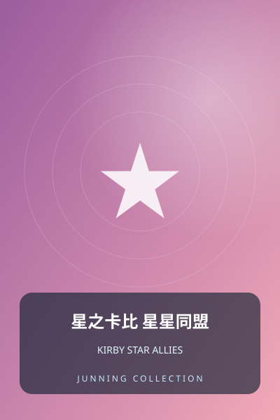
星之卡比 星星同盟
動畫收藏 · 07
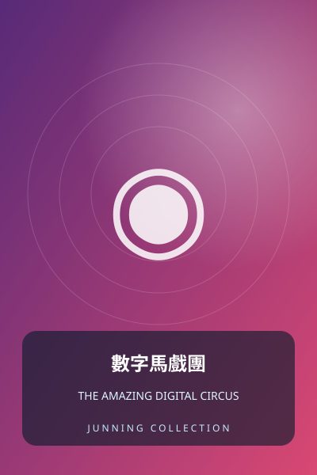
數字馬戲團
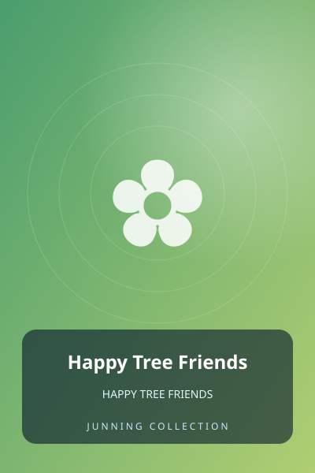
Happy Tree Friends
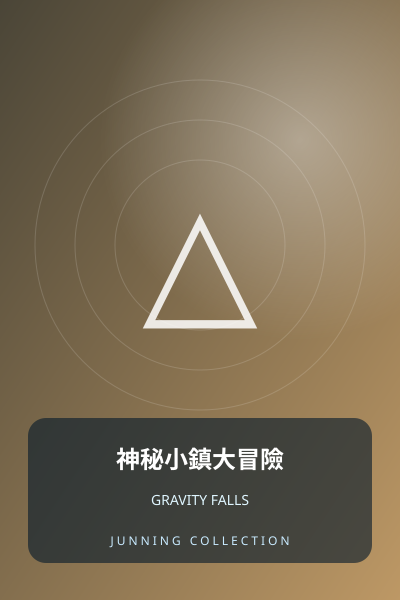
神秘小鎮大冒險
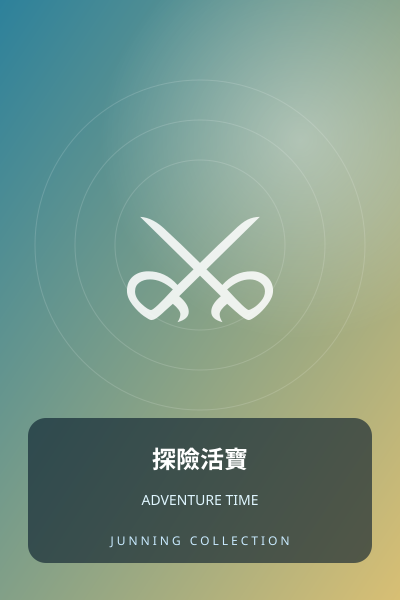
探險活寶
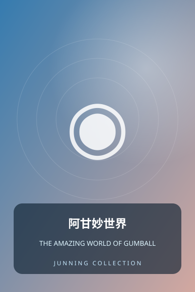
阿甘妙世界
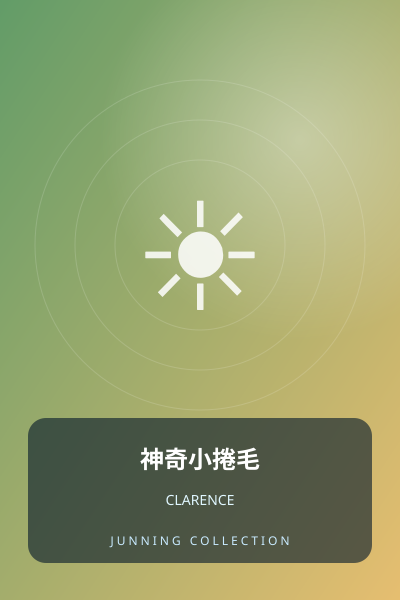
神奇小捲毛
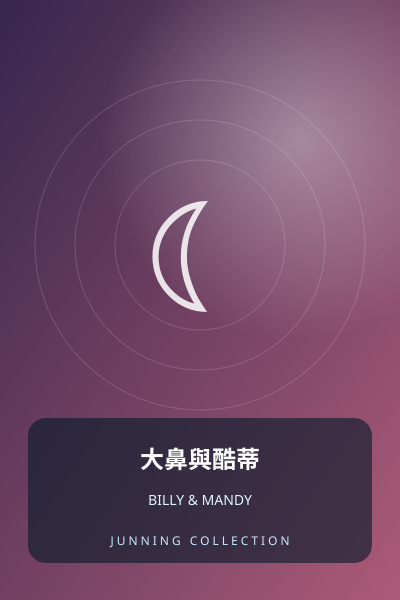
大鼻與酷蒂
目前使用已存放在本站的自製作品展示圖，避免外部圖片失效；這些不是官方封面，後續可再替換。